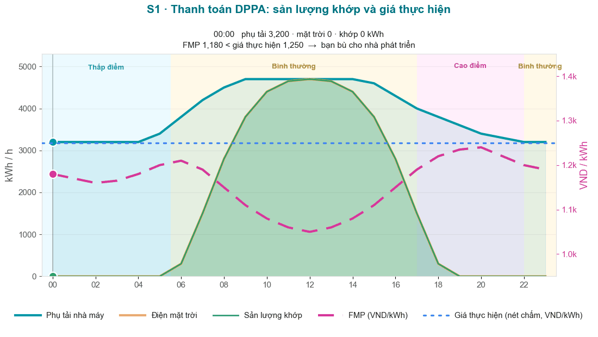
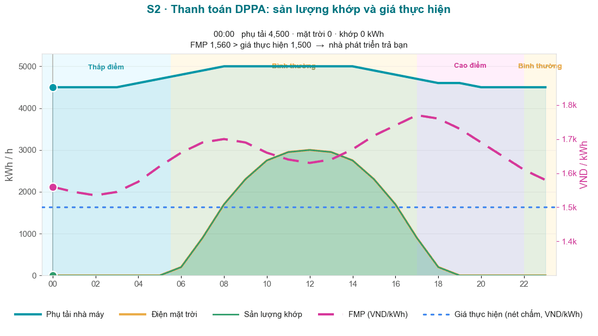

Workshop nhóm DPPA — Tính toán, rồi Đàm phán
Bạn đã xem ba trường hợp điển hình. Giờ hãy làm chúng. Trong các nhóm nhỏ, bạn sẽ chia thành hai bên của một DPPA, tính từng dòng hóa đơn bằng tay, tự kiểm tra với công cụ trực tuyến, rồi đàm phán giá thực hiện và xem CfD đảo chiều theo thời gian thực. Trang này là kịch bản điều hành; các con số ghi trên phiếu bài tập.
Cách tổ chức phòng
Bàn 3–5 người. Mỗi bàn chia thành hai vai. Bạn giữ cùng một vai qua cả ba kịch bản, rồi đối mặt một bàn đối tác cho phần đàm phán.
🏭 Bên mua (nhà máy)
Bạn mua điện. Bạn muốn tổng chi phí thấp nhất so với BAU.
- Tính C_EVN (dòng 1–4) và C_KH (sau CfD).
- Theo dõi giá hiệu dụng VND/kWh và so với giá bán lẻ 2,204.
- Đề xuất giá thực hiện thấp hơn — nhưng biết rằng nhà phát triển phải đủ điều kiện vay vốn.
☀️ Nhà phát triển (RE GENCO)
Bạn bán điện. Bạn muốn một dòng doanh thu đủ điều kiện vay vốn.
- Tính doanh thu nhà máy = spot (Q × K_pp × FMP) + thanh toán CfD.
- Theo dõi dấu CfD: dưới giá thực hiện bạn nhận bù; trên giá thực hiện bạn phải trả.
- Đề xuất giá thực hiện cao hơn — đủ vượt DSCR của ngân hàng (Mô-đun 4).
Kịch bản điều hành (~90 phút)
| Thời gian | Phần | Diễn ra |
|---|---|---|
| 0:00–0:10 | Khung & vai | Ôn lại hóa đơn năm dòng và dấu CfD. Phân vai bên mua vs nhà phát triển. |
| 0:10–0:28 | Vòng 1 — Khớp | Tính tay Kịch bản 1, rồi kiểm tra ở Workshop 1. |
| 0:28–0:46 | Vòng 2 — Thiếu hụt | Tính tay Kịch bản 2, rồi kiểm tra ở Workshop 2. |
| 0:46–1:04 | Vòng 3 — Dư thừa | Tính tay Kịch bản 3, rồi kiểm tra ở Workshop 3. |
| 1:04–1:18 | Đàm phán | Bên mua và nhà phát triển thống nhất giá thực hiện; thanh toán CfD trực tiếp trong ứng dụng. |
| 1:18–1:30 | Tổng kết | So sánh giá thực hiện và kết quả giữa các bàn; rút ra bài học. |
Vòng 1 — Khớp (Q_c = Q_KH = 5,000,000 · FMP 1,150 · giá TH 1,250)

- Bên mua: điền dòng 1–4 trên Phiếu S1, cộng thành C_EVN, rồi cộng CfD ra C_KH.
- Nhà phát triển: tính doanh thu spot (5,000,000 × 1.008 × 1,150) và CfD; cộng thành doanh thu nhà máy.
- Thống nhất CfD chảy theo hướng nào và vì sao. Ghi giá hiệu dụng VND/kWh.
- Kiểm tra: mở dppa-case.web.app → Workshop 1. C_KH của bạn có khớp không?
Tham khảo nếu bí: bài học Kịch bản 1.
Vòng 2 — Thiếu hụt (Q_c 8,000,000 · Q_KH 9,000,000 · FMP 1,600 · giá TH 1,500)

- Bên mua: lần này dòng 4 trở lại — 1,000,000 kWh thiếu hụt theo giá bán lẻ 2,204. Lập C_EVN, rồi trừ CfD âm ra C_KH.
- Nhà phát triển: doanh thu spot trên 8,000,000 × 1.008 × 1,600; CfD nay tốn bạn 800M. Doanh thu nhà máy ròng?
- Ghi hai khác biệt so với Vòng 1: dòng bán lẻ trở lại, và CfD đảo chiều.
- Kiểm tra: Workshop 2 — C_EVN 19,628,262,400, C_KH 18,828,262,400.
Tham khảo: bài học Kịch bản 2.
Vòng 3 — Dư thừa (Q_KH 5,000,000 · phát 6,500,000 · FMP 1,100 · giá TH 1,250)

- Bên mua: hóa đơn chỉ thanh toán trên 5,000,000 bạn tiêu thụ — dòng 4 = 0 trở lại. Lập C_EVN và C_KH.
- Nhà phát triển: tính giá spot của 1,500,000 kWh dư thừa — và phần CfD bạn bỏ lỡ trên nó. Ai gánh rủi ro phát vượt mức?
- Tranh luận tại bàn: hợp đồng có nên cỡ nhỏ hơn không? Điều khoản nào bảo vệ bên ký vượt mức?
- Kiểm tra: Workshop 3 — C_EVN 8,304,644,000, C_KH 9,054,644,000.
Tham khảo: bài học Kịch bản 3.
Đàm phán (~14 phút)
Giờ đối mặt một bàn đối tác. Lấy sản lượng Kịch bản 1 (5,000,000 kWh, FMP ~1,150) làm điểm khởi đầu. Mỗi bên đề xuất một giá thực hiện và bảo vệ nó:
🏭 Bên mua mở thấp
Giá thực hiện gần hoặc dưới FMP giảm thiểu khoản bù — nhưng không ngân hàng nào tài trợ.
☀️ Nhà phát triển mở cao
Giá thực hiện vượt DSCR thì vay được — nhưng bên mua dưới BAU sẽ không ký.
- Thống nhất một giá thực hiện thử. Tính CfD bằng tay:
(giá TH − 1,150) × 5,000,000. Chảy theo hướng nào? - Mở dppa-case.web.app → Workshop 1, rồi kéo thanh trượt giá thực hiện đến con số của bạn. Xem C_KH và dấu CfD chuyển theo thời gian thực.
- Đẩy giá thực hiện lên xuống. Tìm điểm CfD cắt qua không (giá TH = FMP) — và điểm bên mua lần đầu thắng BAU trên bảng nhiều năm.
- Ghi giá thực hiện đã thống nhất và C_KH kết quả vào dòng đàm phán của phiếu bài tập.
Tổng kết (~12 phút)
- Mỗi bàn chốt giá thực hiện nào? Khoảng chênh rộng bao nhiêu?
- Qua S1/S2/S3, dòng nào bất ngờ nhất — thiếu hụt bán lẻ, hay dư thừa không tạo giá trị?
- Ở kịch bản nào CfD bảo vệ nhà máy, và ở kịch bản nào nhà máy phải trả thêm?
- Cổng nào khó thỏa mãn nhất — bên mua (≤ BAU), bên bán (IRR), hay ngân hàng (DSCR)? (Mô-đun 4.)
Kiểm tra trực giác
Tài liệu
Phiếu bài tập: lưới tính in được (S1/S2/S3 + đàm phán) · Bài học kịch bản: S1 · S2 · S3 · Ký hiệu: bảng thuật ngữ · Công cụ trực tuyến: dppa-case.web.app.
facilitator/dppa-workshop-facilitator-guide.md) — không trên trang học viên này.